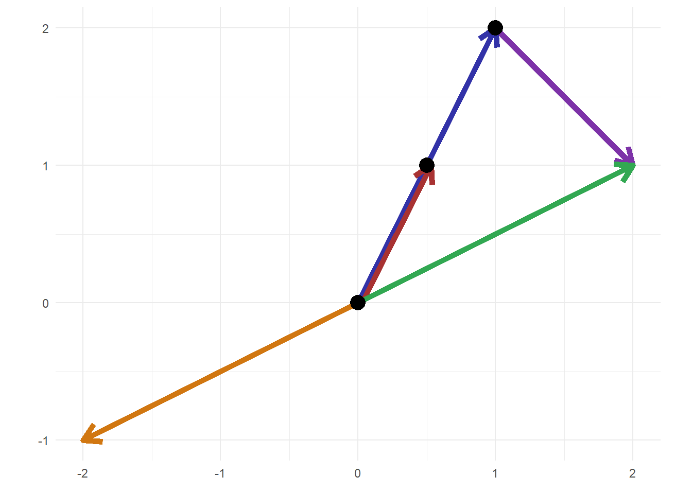

Vektoren
Vektoren sind abstrakte, mathematische Objekte. Wir werden sie einsetzen, um wirtschaftliche Probleme zu lösen, die von mehr als nur einer Einflussgröße abhängen.
Intuition
Vektoren definieren Wege durch eine Länge und eine Richtung. Am einfachsten kann man sich Vektoren so vorstellen: Wir stehen in einem zweidimensionalen Koordiatensystem am Ursprung – also bei dem Punkt \((0,0)\) – und möchten zu dem Punkt \((1,2)\) gelangen. Dafür müssen wir eine gewisse Distanz in eine gewisse Richtung laufen, das ist nachfolgend durch einen blauen Pfeil dargestellt, das ist ein Vektor. Wir notieren diesen Vektor als \(\begin{pmatrix} 1 \\ 2 \end{pmatrix}\), das bedeutet gehe einen Schritt in die \(x\)- und zwei Schritte in die \(y\)-Richtung.
Wenn wir nach der Hälfte der Strecke stehen bleiben, gelangen wir zu \((0.5,1)\), roter Pfeil. Vektoren sind also skalierbar in dem Sinn, dass die Hälfte von \(\begin{pmatrix} 1 \\ 2 \end{pmatrix}\) gleich dem Vektor \(\begin{pmatrix} 0.5 \\ 1 \end{pmatrix}\) ist.
Wenn wir die gleiche Distanz in eine andere Richtung laufen, landen wir natürlich an einem anderen Punkt, grüner Pfeil. Diese Laufrichtung kann auch umgekehrt werden, orangener Pfeil: kehren wir \(\begin{pmatrix} 2 \\ 1 \end{pmatrix}\) um, so erhalten wir den Vektor \(\begin{pmatrix} -2 \\ -1 \end{pmatrix}\).
Darüber hinaus können Vektoren kombiniert werden: Der blaue Pfeil und der lilane Pfeil ergeben zusammen das gleiche Ziel wie der grüne Pfeil: \(\begin{pmatrix} 1 \\ 2 \end{pmatrix}\) und \(\begin{pmatrix} 1 \\ -1 \end{pmatrix}\) ergibt \(\begin{pmatrix} 2 \\ 1 \end{pmatrix}\). Alle diese Überlegungen lassen sich auf beliebig viele Dimensionen verallgemeinern.
Rechnen mit Vektoren
Ein Element aus \(V = \mathbb{R}^n\) notieren wir als \(x = \begin{pmatrix} x_1 \\ \vdots \\ x_n\end{pmatrix}\), wobei die einzelnen Komponenten \(x_1,\dots,x_n\) reelle Zahlen sind.
Die Vektoraddition ist definiert als \[x + y = \begin{pmatrix} x_1 \\ \vdots \\ x_n \end{pmatrix} + \begin{pmatrix} y_1 \\ \vdots \\ y_n \end{pmatrix} = \begin{pmatrix} x_1 + y_1 \\ \vdots \\ x_n + y_n \end{pmatrix},\] wir addieren also komponentenweise.
Die Skalarmultiplikation mit \(\lambda \in \mathbb{R}\) ist definiert als \[\lambda \cdot x = \lambda \cdot \begin{pmatrix} x_1 \\ \vdots \\ x_n \end{pmatrix} = \begin{pmatrix} \lambda x_1 \\ \vdots \\ \lambda x_n \end{pmatrix},\] wir multiplizieren also komponentenweise.
Der Nullvektor ist dann \[0 = \begin{pmatrix} 0 \\ \vdots \\ 0 \end{pmatrix}.\] und der Umkehrvektor \[-x = \begin{pmatrix} -x_1 \\ \vdots \\ -x_n\end{pmatrix}.\]
Wir können also recht natürlich mit Vektoren rechnen, zum Beispiel in dem Fall \(V = \mathbb{R}^3\): \[\frac{1}{2} \left( \begin{pmatrix} 1\\ 15\\ 10 \end{pmatrix} + 2 \begin{pmatrix} 2\\ -4\\ -2 \end{pmatrix} -3 \begin{pmatrix} 1\\ 1\\ 0 \end{pmatrix} \right).\]
Was ist das Ergebnis??
\[\begin{pmatrix} 1\\ 2\\ 3 \end{pmatrix}\]